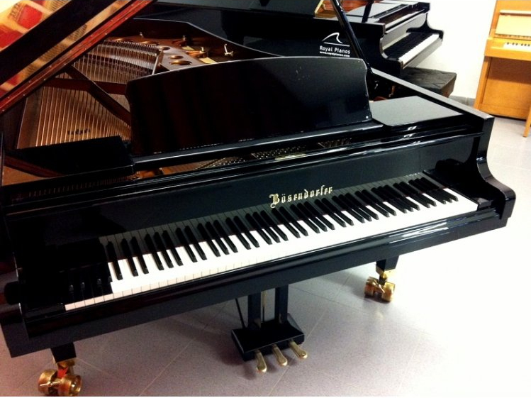

Instrumentación
Clase 005

Чиполлино
"El Clavecin Bien Temperado"
Johann Sebastian Bach
"Feux d´artifice"
Claude Debussy
"Vingt regards sur l'Enfant-Jésus"
Oliver Messiaen
"Musica Ricercata"
György Ligeti
Orquestas triples, pares y de salón
Concierto para Piano n º 3, II Mov.
Sergey Prokofiev
Instrumentos Musicales, su rango y transposición
(Diferentes fuentes)
"Adagietto", IV mov de la V Sinfonía
Gustav Mahler
Bösendorfer
"Piano para 5000 dedos del Doctor T"
"Study for Player Piano No. 21"
"Study for Player Piano No. 37"
005